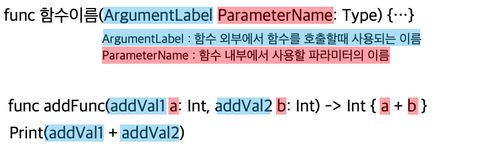

* 개인적인 공부 내용을 기록하는 용도로 작성된 글이기에 잘못된 내용을 포함하고 있을 수 있습니다.
✨수정사항✨
1. 백틱 기호를 활용한 파라미터 내부에서 예약어 사용 관련 내용 추가 -2025.02.14
2. Argument Label 관련 내용 수정 -2025.02.26
#1 Swift 함수 선언 방법
Swift는 func keyword를 사용해 함수를 선언하며, 다른 언어와 달리 함수의 파라미터는 매개변수명 [Parameter Name] 외에 전달인자 레이블 [Argument Label] 이라는 또 다른 이름을 가진다.
함수 선언 원형은 다음과 같다.
func myFunc(매개변수 레이블1 파라미터 이름1: 데이터타입, 매개변수 레이블2 파라미터 이름2: 데이터 타입, ...) -> 반환타입 {
return 반환데이터;
}
앞서 말했듯이, Swift는 매개변수에 이름을 붙이는 전달인자 레이블 [Argument Label]이라는 문법을 제공한다.
Arugment Label 문법은 함수를 사용하는 클라이언트 측에서 매개변수의 역할을 보다 정확하게 표현하고자 할 때 사용한다.
Argument Label 문법을 사용해 재정의한 함수는 컴파일타임에 서로 다른 함수로 인식된다.
/* Argument Lable 사용 x */
func myAddFunc(param1: Int, param2: Int) -> Int {
return param1 + param2;
}
/* Argument Label 사용 o */
func myAddFunc(addVal1 param1: Int , addVal2 param2: Int) -> Int {
return param1 + param2;
}
단 주의해야할 부분은 Argument Label 문법을 사용해 정의한 함수의 호출부에는 기존 파라미터명이 아닌, 새롭게 명시한 전달인자 레이블명을 명시해 주어야 한다는 것이다.
print(myAddFunc(param1: 20, param2: 30))
print(myAddFunc(addVal1: 10, addVal2: 20)) // * 함수 호출시에는 파라미터명이 아닌, 명시한 레이블명을 전달해 주어야 한다.
ArgumentLabel 개념은 다른 프로그래밍 언어에서는 쉽게 찾아보기 힘든 문법이라 사용방법이 어색하게 느껴질 수도 있는데 정리하자면 아래와 같다.

✨ ArgumentLabel은 함수 외부에서 함수를 호출할때 사용되는 파라미터 이름이며
ParameterName은 함수 내부에서 사용할 파라미터의 이름이다.
단, ArgumentLabel은 생략될 수 있으며 ArgumentLabel을 생략시 ParameterName은 ArgumentLabel이자 ParameterName이된다!✨
#1.1 Wildcard : UnderScore를 활용해 전달인자 레이블을 생략하는 방법
함수 선언 시 전달인자 레이블 부분에 _ underScore 기호를 작성해 주면 함수 호출부에서 전달인자 레이블을 생략하고 값만 전달하는 것이 가능하다.
Swift Apple 공식 가이드라인에서 또한 매개변수의 명확한 의미 전달이 필요하지 않은 경우에는 아래 예제와 같이 _ underscore를 활용해 전달인자 레이블을 생략하는 것을 권장한다.
이처럼 _ underScore를 사용해 값을 해체 혹은 무시하는 패턴을 (ArgumentLabel을 생략) 을 WildCard패턴 이라고 부른다.
/* _underScore를 활용한 전달인자 레이블 생략 */
func myAddFunc(_ param1: Int , _ param2: Int) -> Int {
return param1 + param2;
}
print(myAddFunc(1, 2))
#1.2 백틱 기호를 활용한 파라미터 내부에서 예약어 사용하기
Swift에서 변수명 혹은 파라미터명으로 백틱(``)을 사용하면 예약어 (reserved keyword)를 변수로 사용 가능하다.
예시로 반복문을 만들 때 사용하는 for를 파라미터 이름으로 사용하고 싶다면 다음과 같이 함수를 정의하면 된다.
func myReservedFunc(`for` : Int) -> Int {
return `for` + 100
}
print(myReservedFunc(for: 200))300...Multi Paradigm Language
Swift는 OOP (Object-Oriented)와 FP (Functional Programming) 패러다임을 혼합한 Multi Paradigm Language (다중 패러다임 언어)이다.
즉, Swift는 필요에 따라 절차지향, 객체지향, 함수형 프로그래밍 스타일을 섞어서 사용할 수 있다는 것이다.
따라서 Swift의 모든 함수는 First Class Object (일급객체) 로 취급되기에, 일반 값처럼 변수에 저장하거나 매개변수에 전달하는 것이 가능하다.
// 1. 함수를 변수에 저장
func add(a: Int, b: Int) -> Int {
return a + b
}
let myAddFunc = add // 함수를 변수에 저장한다.
print(myAddFunc(3, 5)) // 출력: 8
// 2. 함수를 매개변수로 전달
func calculate(a: Int, b: Int, operation: (Int, Int) -> Int) -> Int {
return operation(a, b)
}
let result = calculate(a: 10, b: 5, operation: add) // 함수를 인자로 전달한다.
print(result)8
15